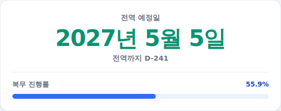

입대를 앞두고 있거나 이미 복무 중이라면 전역일이 언제인지, 얼마나 남았는지가 가장 궁금하실 겁니다. 전역일 계산기는 입영일과 복무 형태만 넣으면 전역(소집해제) 예정일과 D-day, 복무 진행률을 한 번에 계산해드립니다. 쓰는 법은 아래와 같습니다.
-
복무 형태 선택
육군·해병대, 해군, 공군, 사회복무요원, 대체복무요원 중 해당하는 형태를 골라주세요. 복무 형태에 따라 복무기간이 다르기 때문에 정확히 선택해야 합니다.
복무 형태 선택 화면
-
입영일(소집일) 입력
입영일을 연도·월·일 드롭다운에서 순서대로 선택하세요. 입영통지서에 적힌 날짜, 또는 이미 입대했다면 실제 입영한 날짜를 넣으면 됩니다.
입영일 입력 화면
-
결과 확인 — 전역예정일·D-day·진행률
맨 위에 전역(소집해제) 예정일이 크게 나오고, 그 아래 오늘 기준 D-day와 복무 진행률(%)이 막대그래프로 함께 표시됩니다. 아래 카드에서 복무기간·경과일·남은일도 확인할 수 있습니다.

결과 화면
복무기간은 어떻게 정해지나요
2020년 6월 15일 입영자부터 적용된 단축 기준으로 육군·해병대 18개월, 해군 20개월, 공군·사회복무요원 21개월입니다. 양심적 병역거부에 따른 대체복무요원은 현역 육군의 2배인 36개월을 교정시설에서 합숙 복무합니다.
전역일 계산 방식
전역(소집해제) 예정일은 입영일에 복무기간(개월)을 더한 뒤 1일을 뺀 날짜입니다. 입영 당일을 복무 1일차로 계산하기 때문입니다.
계산은 참고용입니다. 기준: 2020.6.15. 입영자부터 적용된 복무기간 단축 완료 기준, 2026년 기준 정리.